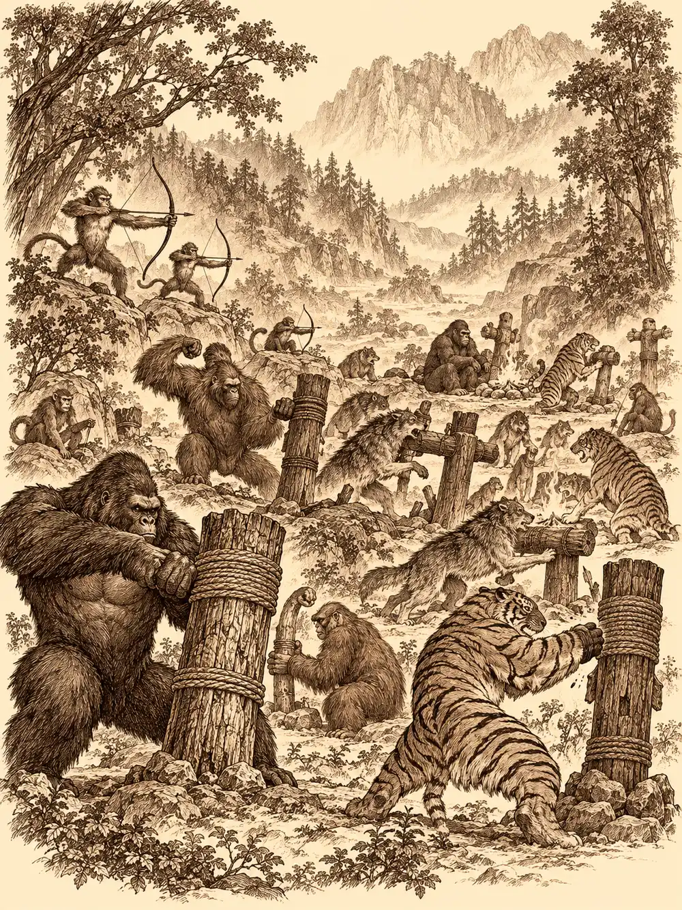

Capítulo 90
Sombras de guerra
Libro VI · La Puerta Negra
Hakara olía a sal y a inquietud. La gente iba a sus quehaceres con la cabeza gacha, cuchicheaba en las esquinas y miraba de reojo a los forasteros que acababan de bajar del barco. Eran dos. Uno era Rodrigo, el narrador de cabello plateado, que había entrado en el gremio hacía apenas nada y al que le habían encargado algo sencillo: encontrar en el pueblo un lugar donde, con permiso de alguien, pudiera instalarse uno de los portales que estaba preparando un colaborador de los cazadores, un inugami capaz de tomar forma de hombre. Con aquellos portales, los viajes de semanas se harían en un paso. El otro era Gelbreak, el drow, que se había ofrecido a acompañarlo sin que nadie se lo pidiera. No se fiaba del poder que los había metido a todos dentro de un cuento, y había pasado la travesía entera mirando fijamente al bardo, a ver qué escribía.
De la taberna salía música. Dentro, el ambiente era otro: la gente reía, levantaba los vasos y aplaudía a una cantante que recorría la sala con un laúd. Era una tritón de piel azulada y escamas finas en los antebrazos, y cantaba sobre el día en que el mar se enamoró de la luna.
La tabernera, una anciana diminuta que fumaba subida a un taburete, reconoció a Gelbreak por el color de la piel, le preguntó si era de los cazadores y, cuando él señaló a Rodrigo, le soltó al bardo semanas de rabia.
"Mandamos una carta al shogun hace semanas. Aquí no viene nadie. Ni un soldado, ni un guardia, ni un cazador. Cuando estabais aquí os dábamos de comer y de dormir, y ahora que habéis arreglado vuestras cosas, si te he visto no me acuerdo".
Rodrigo se ofreció a ayudar, y la anciana le contó lo que pasaba: llevaban semanas sufriendo ataques en las aldeas de los alrededores y en las granjas aisladas del norte. Algo robaba comida, saqueaba huertos, mataba el ganado y se lo llevaba. Si seguía así, en la taberna solo quedaría agua para servir.
En una mesa del fondo, un goliat enorme se despertaba de una borrachera de quince o dieciséis cervezas. Era ancho como una puerta, de carnes abundantes y músculos que asomaban por debajo, más parecido a un jabalí que a un hombre. La canción de la tritón lo había ido sacando del sopor poco a poco, y el jaleo de los recién llegados le estaba estropeando el gusto. Se levantó, dio un manotazo en la mesa y resopló como un toro.
Gelbreak se volvió, calculó el tamaño del problema y se sentó delante de él con su jarra.
"Toma, amigo. Una cerveza".
La cerveza estaba turbia y no tenía espuma. El goliat se la bebió de un trago, soltó un eructo que le echó el pelo hacia atrás al drow y se presentó: Banzo. Venía del norte, de una aldea junto al lago helado, y estaba haciendo una peregrinación por todos los templos de la isla para llevar después lo aprendido a un lugar escondido en las montañas de Can. Había oído que los cazadores se ganaban bien la vida y buscaba trabajo para el que bastara con fuerza bruta. Con una sola cerveza ya consideraba a Gelbreak algo muy parecido a un hermano.
La tritón, entretanto, se había acercado a la barra al oír la palabra cazadores. Pidió algo de beber y la tabernera le puso delante el vaso donde echaba la ceniza.
"Me llamo Calista", le dijo a Rodrigo, cuando la vieja dejó de gritar. "Soy emisaria de la corte del rey dragón del oeste. Iba camino de Sho, pero la tierra es muy distinta del mar. Tantos senderos, caminos los llamáis... Me perdí y acabé aquí".
Rodrigo le propuso un trato. Ella los ayudaría con los saqueos y, a cambio, la llevarían a Sho, o mejor aún, si encontraban sitio para el portal, solo tendría que cruzarlo. A Banzo, cuando se juntaron todos, le explicó que para hacerse cazador había que hablar con Guxi y firmar unos papeles. El goliat lo miró como si le hubieran hablado de magia negra.
"Yo creía que era coger el papel, matar bichos, entregar el papel y que te pagaran".
Fuera, un vecino les contó que las bestias solo herían a quien defendía la comida y les habló de un pescador al que todos tenían por loco.
En casa del pescador les abrió la puerta un viejo desaliñado con un olor que tiraba de espaldas. Banzo anunció que olía a ballena, como su casa, y Gelbreak salió a respirar.
"La gente me llama loco porque digo que los bichos vienen del mar", contó el pescador. "Dicen que los atacan lobos, tigres, bichos de tierra. Pero yo salgo a pescar con las primeras luces, cuando hay niebla, y he visto figuras pequeñitas, como niños, que llevan barcas. Y en las barcas van esas bestias".
Había visto también dónde desembarcaban, las marcas de las quillas en la arena y las huellas de todos aquellos animales. Sacó un mapa y señaló un islote al sur. Lo llamaban el monte de las bestias. Les ofreció llevarlos en su barca. En cuanto al portal, les dijo que hablaran con el monje del pueblo, que andaba de peregrinación y tardaría unos días en volver.
Tras cuatro horas de travesía, el pescador los dejó en una playa del islote y se alejó a esperar. Delante había una jungla sin caminos, y desde el primer paso sintieron que algo los miraba.
Banzo se sentó en el suelo, hizo unos gestos y murmuró unas palabras. A ojos de los demás, hablaba solo. Él, en cambio, veía flotar a su lado a un pequeño espíritu con forma de dragón que no paraba de recordarle que tenía una misión con su aldea y con sus ancestros. Les preguntó por el camino. Los ancestros le dieron dos tramos: primero al norte, cuidado con las trampas; después al oeste, cuidado con las bestias que acechaban en los caminos de alrededor. El último tramo tendría que resolverlo él solo.
"Siempre tan ambiguos", gruñó.
Siguieron las indicaciones entre maleza y mosquitos, oyendo cómo se multiplicaban a su alrededor los ruidos de animales grandes que no se dejaban ver. Al terminar el segundo tramo, Banzo no sabía hacia dónde seguir. Gelbreak trepó a lo alto de un árbol, miró por encima de las copas y bajó con una dirección: por allí la subida parecía menos difícil. Banzo encontró el paso.
Salieron de la jungla al pie de una escalinata de piedra larguísima, con antorchas encendidas a lo largo de los escalones. Gelbreak los volvió invisibles a todos para subir. Arriba se oían voces, golpes, choques de metal, tambores. Al final de la escalera se levantaba un enorme pórtico sagrado de piedra, y en sus pilares había algo grabado: Gran Monte de los Melocotoneros, a un lado; el gran Rey Mono, al otro.
Gelbreak lo leyó, se le fue la concentración y la invisibilidad se deshizo de golpe. "No, por favor", murmuró. "No puede ser".
Al otro lado había un claro inmenso lleno de animales. Monos, lobos, tigres, orangutanes, gorilas. Y no hacían cosas de animales. Unos tiraban con arco, otros golpeaban muñecos con armas de madera y de piedra, otros descansaban junto a hogueras como soldados después de la instrucción. Al fondo, dos gorilas negros montaban guardia delante de un cerezo enorme, más viejo que el tiempo. A su sombra, en un trono de piedra, un mono con armadura dorada y ropas de seda se atiborraba de fruta mientras unos monos pequeños le tocaban música.
Gelbreak fue derecho hacia él sin ninguna prudencia. Los gorilas le cruzaron los brazos delante.
"¡Sun!".
El mono se quedó con un racimo a medio camino de la boca.
"Bueno, bueno. Ya sabía yo quiénes erais. ¿Cómo habéis tardado tanto en subir?".

Rodrigo se adelantó con una reverencia y le preguntó si era Sun Gukon.
"No, muchacho. Soy el gran Rey Mono Sun Gukon, señor de la montaña de los melocotoneros".
Cuando le contaron lo de los saqueos, no lo negó.
"Mis monos no roban nada. Toman prestado. Aportan a la causa de la salvación de Kuroto. Tengo un ejército, y el ejército come".
Y les explicó su plan con toda naturalidad. Con aquel ejército le quitaría el puesto al shogun, que total estaba viejo y no duraría dos días. Le ofrecería Kuroto a Otakemaru y, a cambio, Otakemaru le daría una corona y un trozo de la isla. Quien quisiera quedarse, que se quedara; quien no, que se fuera.
"Y aquí no muere nadie. No hay guerra, no hay miedo. ¿Para qué vamos a pelear contra ese tipo, si nos va a dar una tunda?".
"Se le ha ido la cabeza", le dijo Gelbreak a Rodrigo.
"Por primera vez estoy de acuerdo con vos".
Calista le preguntó si no pensaba que los aliados del shogun lo apoyarían, y que en lugar de evitar muertes provocaría una guerra mayor. Rodrigo le recordó que un rey se debe a su pueblo, y que el pueblo de abajo ya pasaba hambre. El mono se ofendió. Gelbreak le pidió hablar a solas y el mono se negó: conocía a su hermana y se fiaba del drow lo mismo que de ella.
"O me ayudáis o estorbáis. Agarradlo".
Un gorila levantó a Gelbreak del suelo como a un muñeco. El drow se deshizo en sombra y reapareció unos pasos más allá. Banzo, que no se había enterado de casi nada, le dio al otro gorila un golpecito en la nariz con el dedo.
"¿Por qué tocas?".
El mono bajó del trono crujiéndose los nudillos. Y entonces, al verlo moverse de cerca, empezaron a notarlo. Gelbreak lo recordaba con otro pelaje y otras orejas, y Rodrigo y Banzo vieron que la ropa, incluso la armadura, ondeaba sin viento como una tela pintada.
Calista lo resolvió a su manera. Se presentó como cortesana del rey dragón, le sonrió con todos los dientes y le propuso hablar a solas mientras sus compañeros reflexionaban sobre su interesante idea. Al mono se le abrieron los ojos. Se arregló el pelo con la lengua, se estiró la ropa, se acercó dando brincos y le besó la mano. Ella aguantó la cercanía y, con susurros mágicos, avisó a los demás de que prepararan algo.
Los animales se fueron cerrando a su alrededor. Un tigre se plantó junto a Gelbreak enseñando los colmillos; un gorila apoyó la mano en el hombro de Rodrigo. Calista le acarició al mono la mejilla con un dedo. Al tacto no había pelo ni piel.
"No es él", les dijo a los demás en un susurro mágico.
Gelbreak lo paralizó con un hechizo y el disfraz se volvió todavía más evidente.
"¿Nos vas a contar ahora quién eres?".
El falso rey cerró los ojos, apretó los dientes y estalló en una nube de humo. Cuando se disipó, delante de ellos había un macaco encorvado de barba blanca, con una cimitarra en la mano y unas orejas enormes que parecían montadas unas sobre otras: tres a cada lado.
"Me habéis estropeado el plan. Ese Sun se hace rey de la montaña y luego se va y nos deja tirados. Ahora el rey soy yo. Le daré Kuroto a Otakemaru, me hará señor de media isla, y a ese mono lo meteré en una celda para que me haga monerías".
Calista le dijo que las alianzas se rompen con facilidad y que era muy fácil apuñalar por la espalda a un aliado, sobre todo a uno como aquel. El macaco chasqueó los dedos y los animales atacaron.
El macaco tocó a Rodrigo y estalló en otra nube de humo, de la que salieron dos Rodrigos idénticos. Banzo, sin saber a cuál golpear, se enfureció y descargó su rabia contra el tigre. Gelbreak intentó paralizar a los dos y uno de ellos resistió; el de verdad, confuso y obligado a ir contra su copia, le gritó al macaco al oído cosas que le helaron la sangre. Calista, desde atrás, se puso a tocar el laúd fatal y desafinado y le soltó al tigre tales burlas que el animal se derrumbó.
"He visto criaturas con más dientes que tú".
Banzo, para distinguir a los Rodrigos, les preguntó a gritos qué bebida le había ofrecido el drow al conocerlo. Un golpe deshizo por fin la ilusión, y el falso Rodrigo volvió a ser un macaco. Este empezó a bailar golpeándose el pecho, tarareando, y Gelbreak sintió de pronto unas ganas irresistibles de rascarse y de saltar; durante un momento se comportó como un mono, hasta que logró sacudirse aquello de encima. Uno de los gorilas cayó bajo los golpes de Banzo; lo dejaron allí tendido, sin sentido.
Entonces Calista tuvo una idea. Su magia envolvió al macaco y lo encogió, y lo encogió, hasta convertirlo en una sardina que boqueaba sobre las losas. El macaco intentó resistirse a la transformación y ella volvió a apretar el hechizo hasta que no pudo más. Gelbreak vació un frasco pequeño, metió dentro la sardina y lo tapó. Rodrigo la hizo todavía más pequeña.
"Banzo", dijo el drow, tendiéndole la botella. "Lánzala".
El goliat se colocó como en los tiempos en que jugaba a la pelota con los de su tribu, en el último lance contra el último rival, tomó impulso y la lanzó con toda su fuerza. La botella voló sobre el borde de la montaña, siguió volando y se perdió de vista con un destello diminuto.
Nadie supo dónde había caído.
Sin nadie que les diera órdenes, los animales se quedaron quietos, mirándose. De entre los monos salió uno pequeño que Gelbreak reconoció: era Tito, el único mono que había sobrevivido en Ukio. Le hizo gestos de agradecimiento y el drow lo apartó con un pie. Tito se fue a darle las gracias a Calista, que le tomó la manita sin entender nada, y a Rodrigo, que se la estrechó. A Banzo lo saludó desde lejos, por si acaso.
Decidieron que lo que comieran ahora aquellos animales era asunto de Sun. Banzo gritó su nombre con todas sus fuerzas y no contestó nadie. Rodrigo dejó una nota en el trono: Sun Gukon, cuida un poco de los tuyos. No dejes que cualquier mono imbécil te suplante otra vez.
El pescador los devolvió a Hakara. La tabernera recibió la noticia de que los saqueos se habían acabado y quiso saber quién era ese Sun Gukon. Cuando le dijeron que era el mono del bastón, el que lo dejaba todo lleno de barro, prometió que cuando lo pillara se iba a enterar. Rodrigo aprovechó el buen ambiente para preguntarle si podía poner el portal en su taberna.
"¿En mi taberna? Que no. Cuando estabais aquí me dabais el doble de trabajo y pagabais una miseria. Si queréis una puerta mágica de las vuestras, habláis con el monje cuando vuelva. Y a mí dejadme en paz".
Les cobró tres monedas de oro a cada uno por la habitación, tres veces más de lo que valía, y se quedaron a esperar al monje.
Por la noche, sentados a la mesa, Calista hizo una pregunta como de pasada.
"Vosotros, que conocéis a los que fueron a la corte del rey dragón... ¿habéis visto a cierto emisario? Desapareció de repente y no ha vuelto".
Gelbreak dijo que no sabía nada; ella era la primera persona del mar que veía andar. Rodrigo recordó haber oído rumores de que alguien había provocado la cólera del rey dragón del oeste, pero no conocía los hechos.
"Ya veo", dijo Calista, y se quedó mirando el fondo de su vaso. "Ya me enteraré".